Act 1 Import
Counterpoint can import research data from the Act 1 system, and use that research on Proposals. There are two Act 1 import formats that are supported by Counterpoint: the demo summary form and the special Traffic CSV form.
The Act 1 user defines the station lineups for the Counterpoint vehicle in the Act 1 Lineup Manager. Act 1 will add up the individual station audiences and populations to make vehicle audiences and population. The file that is imported has the vehicle audiences and populations for various demographic categories, which are used to calculate GRPs, GRIMPS, CPPs and CPMs for each vehicle. Supported vehicle types are conventional, selling, and rep vehicles.
If groups of vehicles are combined in Counterpoint to form packages, Counterpoint uses the vehicles that make up a package to calculate the audience and population. Counterpoint package vehicles are not in Act 1, and when using packages, to get valid audience data for them, the component elements that make up a package must be included on the Act 1 file so that the research data for those component elements can be imported into Counterpoint, and used to calculate the numbers for the Counterpoint packages.
Act 1 Demo Summary Format
This section describes the process of how to use the Demo Summary file format. For the new file format – Special Traffic System CSV – which includes the lineup codes and settings, see the corresponding section later in this document.
Import Preparation
Vehicle Code
- Vehicle codes must be the same on both Act 1 and Counterpoint.
- In the Act 1 system make a list of the code names assigned to each vehicle. Network lineup names need to be 5 digits. Counterpoint matches the Act 1 research data against those codes.
- In Counterpoint, go to the Vehicle screen, and enter those same codes in the Station Code field. If a code is omitted, Counterpoint can still find that data by matching on the name, but if the vehicle names are spelled differently, they will not be found, and the research will not be imported into Counterpoint.
- Every time a new vehicle is created, it must be assigned a code in the Act 1 system, and that same code must be entered into that vehicle in the Counterpoint system.
Enter the same 5 digit code used from Act 1 into the vehicle station code.
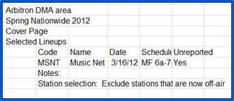
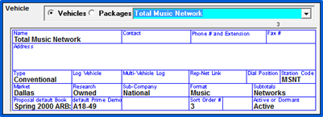
When using the Act 1 Lineup Code feature, the Act1 Lineup that is entered on the Vehicle screen can be used as a way to allow the Act 1 research import to import data with vehicle codes longer than five characters, up to eleven characters. If the Act 1 Lineup code feature is enabled in Traffic Site Options, and the station code (limited to 5 characters) defined for a vehicle does not match the vehicle abbreviation on an Act 1 import file, and the vehicle name in Counterpoint does not match the vehicle name on an Act 1 import file (the name that appears after the abbreviation and the colon), then if there's an Act 1 Lineup code in the "Act 1 Lineup" field for a vehicle (which can be as long as 11 characters), and that matches the abbreviation on the Act 1 import file, then the data will apply to that vehicle.
Example:
The import file shows the following for the vehicle information:
TESTVEHICLE: Test Vehicle A
There’s a vehicle in the system with the vehicle name of "Test", with a station code of "12345", and an Act 1 Lineup code of TESTVEHICLE.
The test performed during step 1 will fail and be bypassed, because the import file abbreviation is TESTVEHICLE and the station code is 12345 (the station code is limited to 5 characters). Step 2 will fail and be bypassed because the import file vehicle name is Test Vehicle A, and the Traffic system vehicle name is Test (and there’s no other vehicle in the system with the vehicle name of Test Vehicle A). Step 3 will find a match because the import file abbreviation is TESTVEHICLE, which matches the Act 1 Lineup defined for the vehicle "Test", and the data will get imported under that vehicle as a result of the match.
Rate Card Preparation
When Counterpoint imports the Act 1 research, it automatically creates two books (2 files). The reports being imported from Act 1 contain daypart data (for whatever dayparts were specified) and Exact Time data which is called Stored Schedules in Act 1.
Daypart Procedures
- View the Rate Card or print the Rate Card Report.
- Check to make sure that the dayparts being sold in Counterpoint are the same dayparts for which the Act 1 research is being generated.
- Adjust the Act 1 lineup or the Counterpoint Rate card until the dayparts match.
Creating the Act1 Import File
There are two ways Act1 research can be imported into Counterpoint: by network, which tallies the research for each station affiliated with the network to arrive at a network research number, or by station, in which every stations’ research is gathered and compiled.
Network Import File
To create the Network import file, go into Act1 and go to the Affiliate system. This is used by the Act 1 Report Source Demo Summary (for Networks) option.
- Pick the Demo Summary Report, leave the default of average quarter hours, choose the population summary repot not the coverage summary.
- Choose the Act 1 network lineup file you have already created, which contains all the stations for each network or program, including the dayparts usually sold for each network.
- Select the daypart if it is not already stored.
- After you have run the report, select Export.
- Save as a CSV file.
- Use an easily-remembered file name.
- Since each file will contain all vehicles using the same dayparts, the daypart name would make a good file name.
- Store the files in the CSI\Prod\Import directory on your network.
- Make as there as many export files as there are unique dayparts.
Station Import File
To create the Station import file, you will need to create a Lineup Analysis in Act1. This is used by the Lineup Analysis (for Stations) import.
- Run the Lineup Analysis report four times, showing average quarter hour, and selecting “Export” each time.
- Request Metro audience, not DMA.
- Reference the Act 1 network lineup file you have already created, which contains all the stations for each network or program.
- Rankings and ratings are not needed and should be suppressed for speed.
- Include columns for the following dayparts:
- MF 12m-12m
- MF 12m-5a
- MF 10a-3p
- MF 12p-130p
- MF 5a-10a
- MF 5a-6a
- MF 5a-7a
- MF 5a-7p
- MF 5a-8p
- MF 530a-10a
- MF 6a-10a
- MF 7a-8p
- MF 3p-7p
- MF 3p-730p
- MF 3p-8p
- MF 330p-8p
- MF 7p-12m
- MF 8p-12m
- MF 8p-9p
- MSu 12m-12m
- MSu 5a-10a
- MSu 5a-8p
- MSu 10a-3p
- MSu 3p-7p
- MSu 7p-12m
- SaSu 12m-5a
- SaSu 5a-8p
- SaSu 5a-9p
- SaSu 12n-6p
- SaSu 8p-12m
- Sat 5a-10a
- Sat 5a-12m
- Sat 5a-8p
- Sun 5a-8p
- Sun 5a-12m
- Give the reports these specific 4 names:
- MPTSPILL.CSV – spill-in included for 8 basic men demos M12-17, M18-24, M25-34, M35-44, M45-49, M50-54, M55-64, M65+.
- WPTSPILL.CSV – spill-in included for 8 basic women demos W12-17, W18-24, W25-34, W35-44, W45-49, W50-54, W55-64, W65+.
- MNOSPILL.CSV – spill-in shown separately, for 8 basic men demos, M12-17, M18-24, M25-34, M35-44, M45-49, M50-54, M55-64, M65+.
- WNOSPILL.CSV – spill-in shown separately, for 8 basic women demos, W12-17, W18-24, W25-34, W35-44, W45-49, W50-54, W55-64, W65+.
- If Act 1 is in a different physical location from Counterpoint, email the files to the designated Counterpoint user, or store them on a floppy disk and mail it.
- If Act 1 is on the same network as Counterpoint, store the files in the x:\CSI\PROD\IMPORT directory, where x is the server drive containing the Counterpoint system.
Lineup Analysis
The lineup file lists each demo category and with AQH values plugged in for each station.
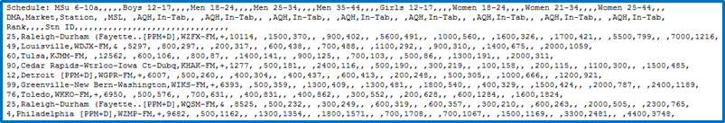
Special Imports
You can create special imports for specific buys if necessary.
Example 1
An additional station is going to be added to a lineup to make a buy that particular lineup may be unique for the proposal creation:
- Create the lineup in Act 1 and save it with a unique name that may include the client name such as :Sears Fall 2011”.
Example 2
Your program is M-F 6A-7P, but there are some stations that carry the show on the weekends
- Create an Act 1 lineup that includes the weekend shows thus increasing the population for the buy.
When creating special lineups, be sure to save them with a name that lets you and the sales AE’s know what the purpose is. If it is for a specific client, using the client name may be the best identifying factor.
Act 1 Special Traffic System CSV Format
Starting with version 8.1, Counterpoint supports the Act 1 Special Traffic System CSV file format for the Act 1 Research import, which allows Act 1 lineup codes and settings defined in Act 1 to be imported directly into Counterpoint, along with the research data, so it can be automatically included on the Proposal XML export and Proposals/Contracts report, without manual data entry being required.
A snippet from the Act 1 Special Traffic System CSV file format is shown below.
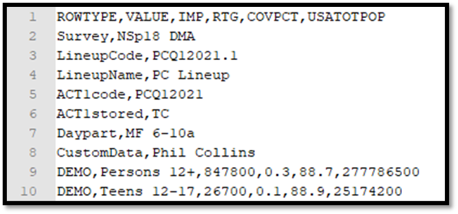
In addition to the population and audience data that are included on the older Demo Summary format, this file format also includes the Act 1 lineup code in the “Act1code” field, and the lineup settings, in the “Act1stored field”. The Act 1 lineup code and settings are used by agencies to re-create the lineup in the Act 1 Planner application, and by automatically importing them into Counterpoint, which automatically includes them on the Proposal XML export file, it leads to greater accuracy and less manual effort when agencies recreate lineups in Act 1.
The Act 1 Special Traffic System CSV file format also allows the Counterpoint vehicle name to be entered, in the CustomData field, so that the vehicle name itself is used to match the data on the Special Traffic System CSV file to the vehicle in Counterpoint. In the Act 1 Lineup Manager application, when generating the Special Traffic System CSV export, the Custom Data field appears with a yellow background, and is a text editable field. Type the Counterpoint vehicle name directly in this field for it be included in the CustomData field on the export file.
Unable to Connect to Database
If an "unable to connect to database" error message appears when running the Act 1 Special Traffic System CSV import, and the Actian database is on another PC than the one being used to run the import, the Traffic.ini file may need to be modified with a special parameter. If this is the case, please contact Counterpoint Support for assistance. For more information, click here.
Act 1 Import Procedure
- Place the CSV file into the CSI\PROD\IMPORT folder or another folder you can browse to and access.
- From the Import Research Shortcut or the Task menu, select Import->Research->Act1
- Use the “Browse” button, select the first of the files you wish to import, and click OK.
Import Screen
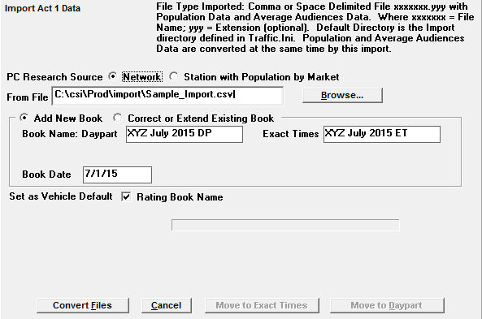
- PC Research Source: should be answered Network for all users on versions prior to Version 7.1. On version 7.1 and above, this options is labeled Act 1 Report Source. To import a Demo Summary file or the new Special Traffic System CSV file, select the “Demo Summary (for networks)” option. The system will automatically detect which file format is being used. (The Lineup Analysis Option is described in the next section.)
- Add New Book: is the default, since it is assumed that the research is being imported for the first time.
- Correct or Extend Existing Book: is used to change a book already imported. The book can be re-exported from Act 1 and re-imported into Counterpoint. Select the book to alter from the list of books when “Correct or Extend Existing Book” is selected.
- Book Name Daypart: Enter the book name for the daypart data. If only daypart data is included on the file being imported, then only the daypart book name needs to be entered. It is recommended that when naming a daypart book to include the letters “DP” in the book name.
- Book Name Exact Times: If Exact Time data is used (indicated with the words “Stored Schedule” on the import file), enter the Exact Time book name. It is recommended that when naming an exact time book to include the letters “ET” in the book name. Note: it is possible to have an import that has both Daypart and Exact Time data. By entering both a Daypart and Exact Time book name, two books will be created: one for the Daypart data, and one for the Exact Time data.
- Book Date: The Book Date must be defined (mm/dd/yy format).
- Set as Vehicle Default Rating Book Name: By checking this, you are telling the import program that the book you are importing is the latest book for these vehicles, and you want the import program to update the Vehicle screen and make this book the default book for each Vehicle in this import. Uncheck this option if you don’t wish the book you are importing to become the new default research book for each vehicle on the book.
Click the Convert Files button to begin the Import
Lineup Analysis (For Stations) Import
V7.1 and higher offers the Lineup Analysis import.
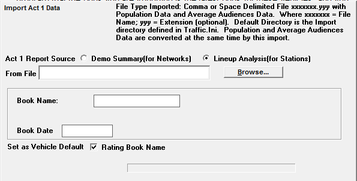
- To run an import by network, select “Demo Summary (for Networks)” from the Act1 Report Source field and follow the import steps listed above. If you are using the Demo Summary file format, or the new Special Traffic System CSV file format, choose the “Demo Summary” option. The system will automatically detect which file format is being used and import the data correctly for the format used.
- To run a station import, select “Lineup Analysis (for stations)” from the Act 1 Report Source field.
- Click Browse to select the Station Lineup to import
- Book Name: The name of the research book used to uniquely identify it.
- Book Date: The Book Date must be defined (mm/dd/yy format).
- Set as Vehicle Default Rating Book Name: By checking this, you are telling the import program that the book you are importing is the latest book for these vehicles, and you want the import program to update the Vehicle screen and make this book the default book for each Vehicle in this import. Uncheck this option if you don’t wish the book you are importing to become the new default research book for each vehicle on the book.
Verification
To view the imported Research book, go to the Traffic List screen->Research.
Select the book from the dropdown.
The Daypart data will be stored either under the “Sold Daypart” or “Extra Daypart” buttons, depending on whether the research daypart matches the daypart in the Rate Card.
Example showing Sold Daypart
When dayparts are imported, they are compared to the dayparts in the latest Rate Card. If they match exactly, they are stored as Sold Dayparts.
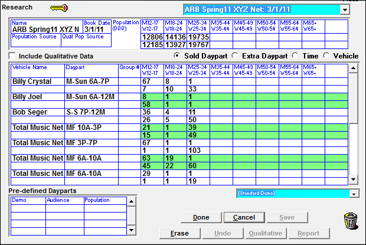
Additional Daypart Information
On version 7.0 and earlier versions, only certain day spans, such as Monday through Friday, Monday through Saturday, Monday through Sunday, Saturday through Sunday, Friday through Sunday, and a few others, were accepted by the import and able to be matched up to dayparts on the Rate Card. On version 7.1 and above, it will allow any day span, as long as the days are consecutive, without gaps, such as Tuesday through Thursday, Wednesday through Saturday, Thursday through Sunday, and so on. (A day span such as Monday, Wednesday, and Thursday, will not be matched to a daypart because of the day gap between Monday and Wednesday.)
For example, here’s an example of the daypart line from an Act 1 import file (demo summary version), with the daypart of Tuesday through Friday 6a-10a specified:
,TuFr 6a-10a,,,Total,,
If the corresponding vehicle has a daypart with the days and times of Tuesday through Friday, 6a-10a, like the daypart picture below illustrates, the research will be imported for that vehicle and daypart.
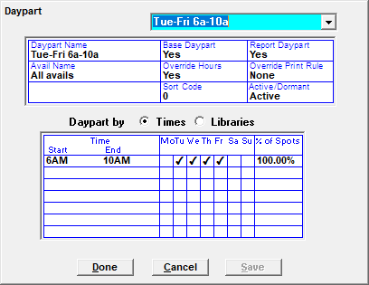
If this vehicle and daypart is on the current rate card, the data will be imported into the “Sold Daypart” area.
Note that the start and end time and valid days defined for the daypart are what the import uses to match up the dayparts on the import file with the dayparts in the Traffic system. The daypart name defined in the Traffic system for the daypart is irrelevant to this matching process.
Example showing Extra Daypart
When dayparts are imported, they are compared to the dayparts in the latest Rate Card. If they don’t match, they are stored as Extra Dayparts.
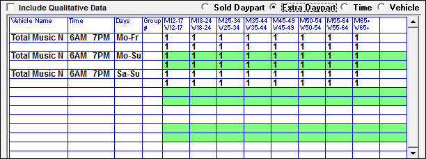
Lineup Codes and Settings
If you used the Special Traffic System CSV import file format, the imported lineup codes and settings will be visible on the Research screen and on the Research report. A picture of the Research screen with the lineup codes and settings is shown below.
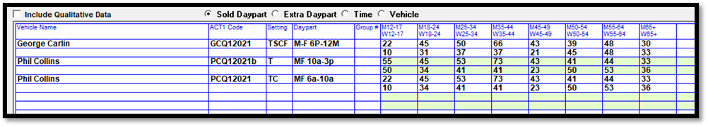
The Proposals/Contracts report (and contract snapshot report) will show the Act 1 lineup codes and settings, as shown in the picture below, on the detail page, when the “Research” option is checked on, for contract lines that have them defined (as a result of importing them with the research book when using the Special Traffic System CSV import).
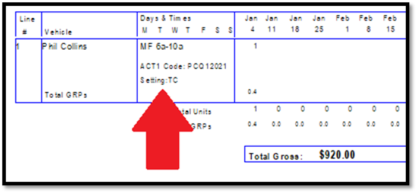
The lineup codes and settings will also be shown on the Proposal XML export, as shown in the example below.
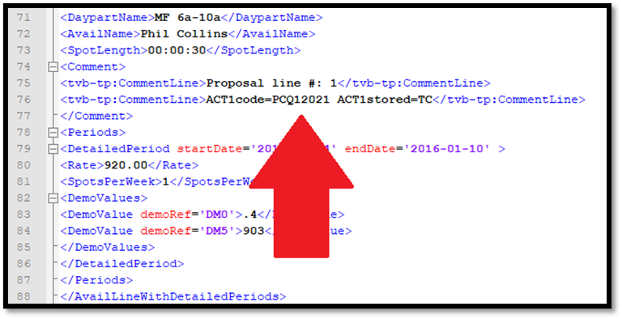
Packages and Lineup Codes and Settings
The Act 1 research import is used to import research data for conventional, selling, and rep vehicles. Research data for package vehicles cannot be imported directly through the Act 1 research import, instead the hidden line components that make up a package are imported, and that data is used by Counterpoint to calculate the package research data. Because the Proposal XML only displays packages and conventional (non-package) lines, and not hidden lines, the following procedure should be used to get lineup codes and settings onto the Proposal XML for package lines:
1. Add the proposal to Counterpoint, using research books for the hidden lines that were imported using the Act 1 Special Traffic System CSV file that includes the lineup codes and settings.
2. Run the Proposals/Contracts report with the “include hidden lines” option checked on so that the hidden lines that make up each package are displayed, along with the lineup codes and settings for each hidden line.
3. In the Act 1 Lineup Manager, create a lineup for each package vehicle, using the lineup codes and settings of the component elements that make up each package, getting the lineup codes and settings from the Proposals/Contracts report.
4. Once the package lineups have been created, note the lineup codes and settings to use for the packages, then go back into the proposal in Counterpoint and add the lineup codes and settings for the packages into the corresponding package lines, in the Override field, as shown in the picture below. (Note: the Act 1 section on the Override popup only appears for package lines, as the hidden and conventional lines get their lineup codes and settings directly from the research book.) On the package override popup, the Act 1 code should be typed directly into the Act 1 Lineup field, and the different settings can be toggled to by clicking the toggle buttons to Yes or No for Stored Times (T = yes), Stored Spots (S = yes), Store Clear % (C = yes), and Daypart Filter (F = yes).
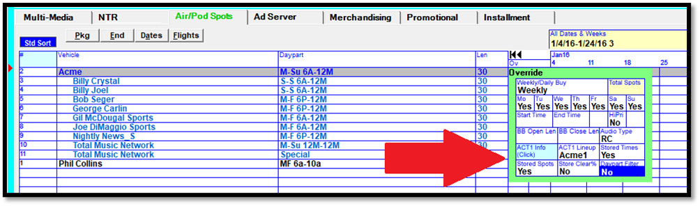
5. After saving the proposal with the lineup codes and settings defined for the package lines, generate the Proposal XML, and it will include the lineup codes and settings that were defined for the package lines, as shown in the snippet from an example Proposal XML below. The Proposal XML can now be sent to the agency and they can easily and accurately recreate the package lineups using the lineup codes and settings from the Proposal XML.
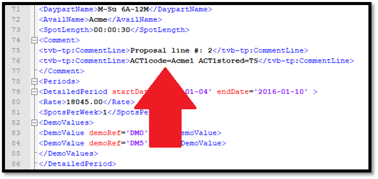
Alternatively, if a standard package is configured on the Rate Card Standard Package screen with the “alter name” setting of “no”, and the “alter hidden” setting of “no” or “comment/audio only”, then a default Act 1 Lineup code and default settings can be entered for that standard package on the standard package screen, as shown in the picture below.
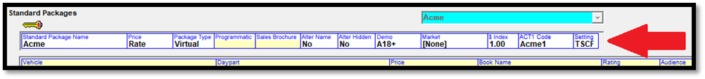
The Standard Package Act 1 Code and Setting field will be yellow/inaccessible if “alter name” is set to “yes” and/or “alter hidden” is set to “yes”.
When a standard package has a default Act 1 code and settings defined like this, when that standard package is added to a proposal, the default lineup code and settings defined for that package will get automatically added for the package line, so that it doesn’t have to be typed in manually, and it will appear in the Override area, as shown in the picture below.
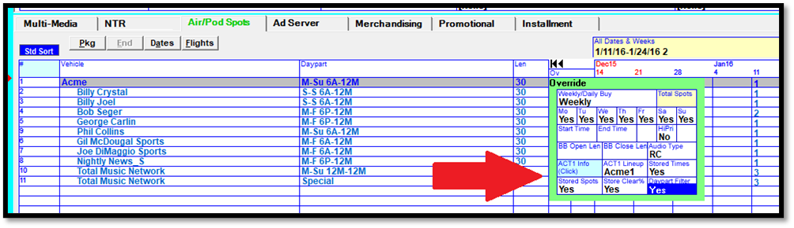
This option is only available when the hidden lines and package name are disallowed from being edited, to help ensure that the default lineup code and settings as defined for the standard package are in sync with the corresponding composite package defined in Act 1. When new default vehicle research data is imported for the hidden lines that make up that standard package, if the Act 1 lineup code and settings for the corresponding composite package in Act 1 changes, then the default Act 1 code and settings defined for the standard package in Counterpoint should be updated accordingly, so that when standard package is added to a new proposal, it gets the correct, updated Act 1 lineup codes and settings for the package/composite.
Special Imports
The population totals are kept only once in each book. If your proposal requires a different population for the buy, you may need to create a special import. For example: If there is an additional station that is going to be added to a lineup for a client buy, create the lineup in Act 1 and save it with a unique name that may include the client name such as ”Sears Fall 2015”.
You may need to create a special import that reflects a different population due to the dayparts. For example: If your lineup is M-F 6A-7P for a show, but there are some stations that carry the show on the weekends, you may want to create another Act 1 lineup that includes the weekend shows thus increasing the population for the buy. Create the lineup in Act 1 and save it with a name that lets you and sales AE’s know what the purpose is. If it is for a specific client, using the client name again may be the best identifying factor.